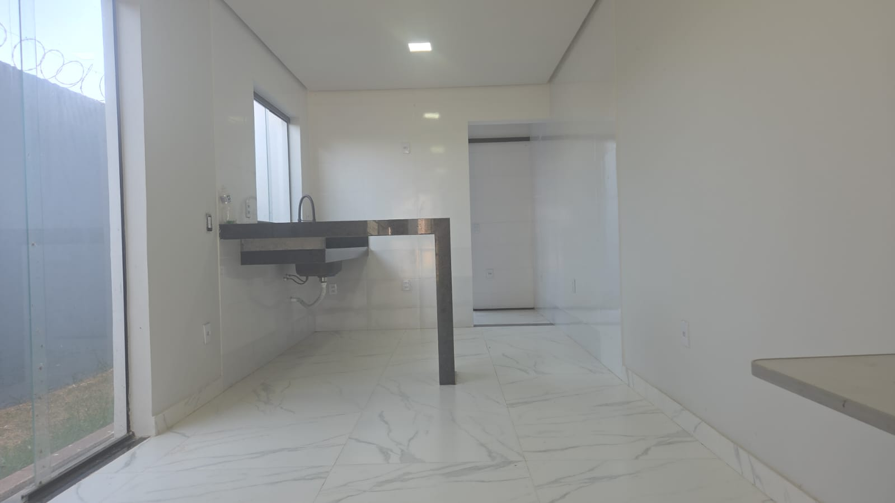

Construção do zero
Você tem o terreno. A gente entrega a chave.
- Fundação, estrutura e alvenaria
- Instalações elétrica e hidráulica
- Acabamento completo
- Sistemas sustentáveis, se você quiser
Construtora · Montes Claros/MG
Casa do zero, reforma, ampliação ou um serviço pontual — a IRL faz obra em Montes Claros há mais de 10 anos. Orçamento fechado e cronograma antes de a primeira parede subir.
IRL · Empreendimentos Sustentáveis
O que fazemos
Da casa inteira ao serviço de um fim de semana. Nós executamos a obra — se você já tem o projeto arquitetônico, tocamos a construção a partir dele; se ainda não tem, converse com a gente antes de fechar, porque a escolha do projeto muda o custo de tudo.
Você tem o terreno. A gente entrega a chave.
Sua casa já existe. A gente melhora o que ela é.
Não precisa ser obra grande para a gente atender.
Também fazemos
Não achou o que precisa? Pergunte — a lista não é fechada.
Por que confiar a obra
Obra que atrasa e estoura o orçamento quase sempre começou sem nada definido no papel. A gente resolve isso antes de a primeira parede subir.
O valor da obra com o escopo detalhado por etapa. O que está incluso e o que não está fica escrito — para não virar discussão no meio do caminho.
Cada fase com prazo e ordem, entregue antes de a obra começar. Você sabe o que acontece em cada mês.
A obra anda com registro do que foi feito. Você acompanha sem precisar ir ao canteiro todo dia — e sem depender de promessa verbal.
Obra pronta
Sobrado de 98 m² entregue com os três sistemas instalados, porcelanato 80×80 contínuo e esquadrias em blindex. Da fundação à chave.



É a casa inteira feita do jeito que defendemos: os três sistemas planejados desde a fundação, acabamento resolvido na entrega e nada para reformar depois de mudar. Serve como referência do padrão que entregamos.
Diferencial
Somos construtora sustentável, e isso é opção sua, não obrigação. Se quiser aquecimento solar, captação de água da chuva ou filtragem para a casa toda, saiba que cada um tem uma janela na obra em que precisa entrar — e ela abre bem antes do acabamento.
Arraste para o lado para ver a obra inteira
Depois da entrega tudo isso ainda é possível — mas vira reforma: quebrar parede, refazer forro, remexer no piso. É por isso que instalamos durante a obra. E é por isso que também fazemos essa instalação em casa já pronta, quando o cliente chega depois.
Como trabalhamos
A gente vai ao terreno ou ao imóvel, entende o que você quer e o que é possível. Sem custo e sem compromisso.
Você recebe o valor da obra com o escopo detalhado por etapa. O que está incluso e o que não está fica escrito.
As etapas ganham prazo e ordem. Você sabe o que acontece em cada mês antes da obra começar.
A obra anda com registro do que foi feito. Você acompanha o andamento sem precisar ir ao canteiro todo dia.
Limpeza final, teste das instalações e a casa pronta para morar — com os sistemas funcionando e explicados.
Perguntas frequentes
Não. Nós executamos a obra. Trabalhamos a partir do projeto arquitetônico — se você já tem um, tocamos a construção a partir dele. Se ainda não tem, converse com a gente antes de fechar o projeto: algumas decisões de desenho mudam bastante o custo da obra.
Instalados durante a construção, eles representam uma fração pequena do custo total, porque aproveitam a tubulação e a escavação que já estão sendo feitas de qualquer forma. O que encarece é instalar depois, quando é preciso quebrar o que já está pronto.
Dá, e é um dos nossos serviços. A viabilidade depende de como a casa foi feita — onde passa a tubulação, se há espaço para o reservatório, como é a cobertura. Fazemos uma avaliação antes de orçar.
Fazemos reforma e ampliação. Para saber se o seu caso cabe no nosso escopo, mande uma mensagem descrevendo o que precisa — respondemos com sinceridade se for melhor procurar outro tipo de profissional.
Nossa base é Montes Claros. Para obras na região, consulte — depende da distância e do porte do serviço.
Contato
Responder um orçamento leva alguns dias de trabalho. Responder uma mensagem leva minutos — comece por aqui.